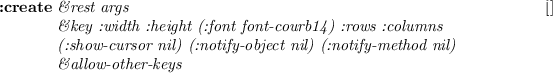
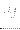
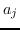
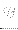
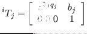
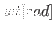
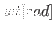
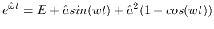
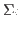

Next: EusLispによる幾何情報のモデリング Up: ロボットのデータ構造とモデリング Previous: ロボットのデータ構造とモデリング Contents Index
ロボットの構造はリンクと関節から構成されていると考えることが出来るが， ロボットを関節とリンクに分割する方法として
この様に分割されたリンクを計算機上で表現するためにはツリー構造を利用する ことが出来る．一般的にはツリー構造を作るときに二分木にすることでデータ構 造を簡略化することが多い．
ロボットのリンクにおける同次変換行列の求め方としては，関節回転座標系上に 原点をもつを設定し，親リンク座標系からみた回転軸ベクトルが , の原点がであり，回転の関節角度をとする．
このときの親リンク相対の同次変換行列は
ここで，
は，一定速度の角速度ベクトルによって生ずる回
転行列を与える以下のRodriguesの式を用いている．これを回転軸 周りに
だけ回転する回転行列を与えるものとして利用している．
周りに
だけ回転する回転行列を与えるものとして利用している．
親リンクの位置姿勢が既知だとすると，の同次変換行列を